The approved wall, platform, gate and UI are reused unchanged. Static approved character sprites provide scale and readability checks. This is an isolated art study.
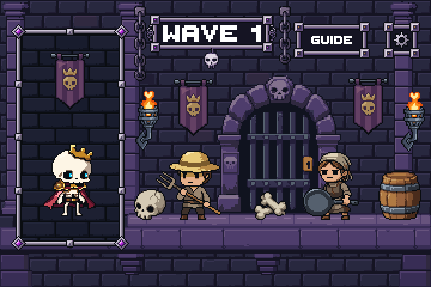
Each option uses an actual captured Unity screenshot at that size. Alternative dressing keeps the combat stage open. No production Game scene, gameplay or build settings changed.
Native exported assets
Complete sprites have 2px transparent clearance. Chain pieces meet at deliberate connection edges; the complete chain has clearance around its whole silhouette.
Same source canvas and silhouette. Choose native 1× or enlarged nearest-neighbor views. Palette cleanup changes only new candidate sources.
Torch
PixelLab raw
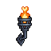
LibreSprite cleaned
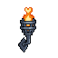
Chain
PixelLab raw
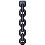
LibreSprite cleaned
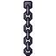
Banner
PixelLab raw
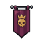
LibreSprite cleaned
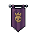
Barrel
PixelLab raw
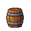
LibreSprite cleaned
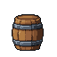
Jar
PixelLab raw
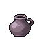
LibreSprite cleaned
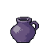
Bones
PixelLab raw
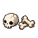
LibreSprite cleaned
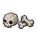
Rubble
PixelLab raw
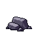
LibreSprite cleaned
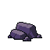
Actual golden references at 1×
Rattlebones governs rendering discipline; Farmer and Pan provide the approved supporting style family.
Verification
Unity art-preview test and repository Unity validator passed. Fifteen captures cover native 360×240, 720×480 and 1080×720. Integer zooms match exact nearest-neighbor replication; the undressed baseline matches Stage 03 pixel-for-pixel.
All 765 protected files and eight existing main-checkout edits remain unchanged. Seven sources cost 35 PixelLab generations. Stage 05 has not started. No merge.